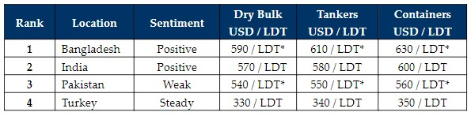

inWeekly Demolition Reports18/04/2023

A comparable gloom has descended across all of the major ship recycling destinations whilst prices, demand, and sentimentsare all retreating, as a miserable supply of tonnage and continued struggles on L/C financing issues plague the most recent deliveries into Bangladesh and Pakistan, the recycling industry has certainly been through a tough and quiet week.
The ongoing month of Ramadan has also led to much softer sentiments across the board, as ongoing religious festivities are observed, and business takes a backseat for the time being. Volatile steel plate prices have not helped the current situation brewing at the various recycling destinations either, and this has seen most end users of fresh tonnage abstain from buying, choosing instead to wait and watch developments and how the market opens post Ramadan, before offering afresh on any new vessels being proposed.
The primary problem for recyclers at all the major locations is the ongoing and noticeably painful shortage in the supply of vessels for recycling, as freight markets in Dry Bulk and Containers have shown some renewed positivity of late.
As such, after a decade long low supply and activity, last year even though it seemed as though it would been an overall busy and bullish start to 2023 for the major recycling markets. However, things seem to be easing off even before May arrives and the customary cooling of performance in the sub-continent markets due to the oncoming Monsoon season will only further aggravate the present situation – despite the state of supply and the current (and plenty of) availability of space at dormant plots.
Making matters worse, with both Bangladesh and Pakistan markets still requiring lengthy central state bank approval processes to open new L/Cs, it is certainly going to be a painful process to get vessels delivered (in time) moving forward, and patience / extra waiting times will certainly be required from those Owners / Cash Buyers seeking to deliver units moving forward. Lastly, the Turkish market echoes virtually identical sentiments and fundamentals as the sub-continent markets, including the Lira, which continues to relapsefurther every week.
For week 15 of 2023, GMS demo rankings / pricing for the week are as below.

📄 Download PDF: Ship-recycling-market-insight-week-15-2023-Taking-a-Backseat.pdfSource: GMS,Inc. ,https://www.gmsinc.net/gms_new/index.php/web